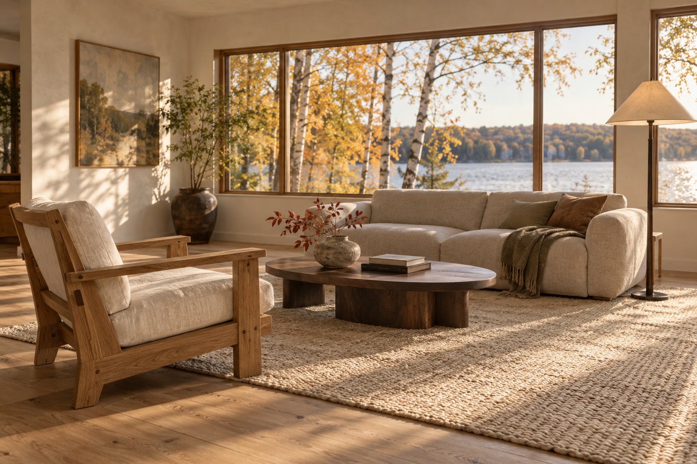

Room Proof — The whole job
Founder review
22 October 2026
Round three

| Line | Item | Qty | Unit | Rough unit |
|---|---|---|---|---|
| LR-01 | Oak lounge chair | 1 | each | $2,072 |
| LR-02 | Linen sofa | 1 | each | $4,480 |
| LR-03 | Walnut cocktail table | 1 | each | $1,764 |
| LR-04 | Bronze floor lamp | 2 | each | $756 |
| LR-05 | Hand-knotted wool rug | 1 | each | $3,472 |
| LR-06 | Travertine side table | 2 | each | $532 |
| LR-07 | Upholstered ottoman | 1 | each | $952 |
| LR-08 | Oak reading table | 1 | each | $588 |
| LR-09 | Low media cabinet | 1 | each | $2,310 |
27 more lines in this room, and 44 more elsewhere in the job. Selected pieces receive photographic detail.
One job paper, many working depths.
The job stays a single page you scroll. Inside Pieces, the furniture schedule unfolds to the full width of that page for real work on dozens of lines, then folds back into the same room you left.
The sample job: Lake Mendota House
- Living room
- 36 lines
- Bedroom
- 28 lines
- Entry
- 12 lines
- Throughout
- 2 lines
- Unassigned
- 2 lines
- Whole job
- 80 lines
The working brief2
Give the whole room a working schedule.
The approved feeling remains. This pass addresses the scale, editing depth and page continuity needed for an active job.
-
Dozens of lines in one room
A living room carries dozens of selections, components, finishes and labor lines. This sample has 36 in the living room and 80 across the job, with persistent labels, quantities and room placement.
-
The real FF&E editor was missing
The live editor has five views: Preliminary selections, Specifications, Pricing, Purchasing authorization and Finish schedule. Each has a distinct job. This round gives the editing fields, calculations and consequence language space to work.
-
Keep the job’s existing page flow
The current job is one continuous page: approvals, schedule, pieces, financials, closeout, record. Round two demonstrated individual workflow screens. This pass reconnects the operational work to that continuous job page.
Kept from round two
- The warm paper stock, serif titles and quiet rules you approved.
- The room on the left, the running flow on the right.
- Photographs for selected anchor pieces only, never for every item.
Changed in round three
- One file, one project, one scrolling page, in the current chapter order.
- The FF&E sheet opens in place, uses the whole width, and closes back to the same room.
- Preliminary selections, Specifications and Pricing work on the same line IDs. Authorization reviews the whole job; Finishes edits room surfaces. All stay inside Pieces.
Not claimed
- No user testing has happened. This is a design study for you to judge.
- This is not production parity. The capability map says what is working, what is a study and what is deferred.
One continuous page3
The job is one paper. Pieces unfolds in place.
The chapters keep the order the current project page already uses. A running index sits in the right margin and follows you down the page. When you open the furniture schedule it borrows the full width, and closing it leaves you at the same room.
Room plate
One photograph for context, with selected anchor pieces alongside.

Preliminary selectionsSpecificationsPricingPurchasing authorizationFinish schedule
Room lines for editing; the whole job for authorization; room surfaces for finishes. Close to return to the room.
Destinations vs. unfolds4
Keep the workflow inside the job.
The operational sheet opens inside the job document. Its working views change the fields in front of you while preserving the project and your place.
Round two: destinations
- Project page, four pinned pieces
- Piece proof
- Approval
- Accounts
- Orders
- Spec book
Round three: one page with unfolds
What changes for someone working a room
| Moment | Round two | Round three |
|---|---|---|
| Opening the schedule | Room and piece studies with a short item set. | Unfold the sheet inside Pieces, on the same page. |
| Switching from specifying to pricing | Detailed FF&E pricing was not demonstrated. | Change the lens. The same lines stay, the columns change. |
| Looking at one line | A card on its own screen. | The row unfolds in place with the sheet still around it. |
| Finding your place again | Return between separate workflow screens. | Close the sheet and you are on the same room, with the same running index. |
| Photographs | Four pins stood for the project. | Room imagery sets the context; the full schedule unfolds below it. |
Try the job5
The actual page, seven ways in.
Each scene opens the same continuous job page at a different study. The frame below is live: type, paste, filter, edit, move, remove and undo. Lines you add and changes you make are kept in this browser only.
Reading
Try this
What this scene shows
The frame has not finished loading. Try “Open this scene full size”, and check that job.html sits beside this file.
One scene is loaded at a time. The sample is fictional. The page sends, signs, uploads and grants nothing.
Capability map6
Where each real act goes, and how real it is here.
This table maps the principal current interactions reviewed against the live portal and source. It does not say everything is built. “Working” means you can try it in the frame with sample data. “Study” means a local preview. “Future” means not in this prototype.
| Current interaction | New home on the job page | In this prototype | See it |
|---|---|---|---|
| Five views: Preliminary selections, Specifications, Pricing, Purchasing authorization, Finish schedule | Three editing views share line IDs. Authorization considers all rooms; Finish schedule edits separate room surfaces. Each stays inside Pieces. | Working | |
| Keyboard line entry and pasting rows | An entry row at the foot of the rough sheet. Pasted rows appear as a preview before anything is added. | Working, local only | |
| Room scope, search and filters | Above the sheet, with the job title and return in view. Line revisions appear inside the specification. | Working | |
| Library, groups, moving and removing lines | Library picker and groups on the rough lens. Remove offers undo, and a line keeps its ID when moved. | Working | |
| COM and labor, maker and product, finish, dimensions, lead time | The row unfolds in place on the Specifications lens. | Working with sample fields | |
| Price ambiguity: quantity, trade, markup, margin, client, retail, rough | Pricing lens with two-way entry. When a cost changes you choose which figure holds. Summary target and tax sit in the totals. | Working, sample arithmetic | |
| Released and issued lines | Released quantities and client prices are protected. Record a change creates a local draft; the original stays unchanged. Trade cost remains editable until ordered. | Working, local draft | |
| Purchasing authorization and the client edition | Whole-job readiness and exclusions, then a saved local client draft without trade cost, markup, margin or studio notes. Existing drafts must be voided before replacement. | Study: local preview, no send, sign or grant | |
| Finish schedule and printing | Room, surface, product, sheen and swatch kept apart from item finishes, with a local printable preview. | Study: local print preview | |
| Approvals, schedule, financials, closeout, record | Chapters on the same page, collapsible. The existing commercial workflows remain in round two. | Study: visual, not a rebuilt back end | |
| One line placed in several rooms | Not designed yet. Each sample line has one room or none. | Future | Not in the frame |
| Trade-scope authoring | Existing trade-scope capability needs a dedicated in-place design pass and permission mapping; it is deferred here. | Future | Not in the frame |
| Actually sending, signing, uploading, or aligning to drawings | Integration work. The prototype only previews what would be shown. | Future and integration | Not in the frame |
These status words describe what the prototype is meant to do. The two documents below record how the studies were traced to the live editor and what was actually checked.
- SOURCE-MAP.md traces each interaction to the live editor and repository source.
- VERIFICATION.md records what was checked and what was not.
- Inspect the unlinked-client study: authorization preparation is unavailable until a client is linked.
- Shared placements, restricted-money seats, trade-scope authoring, live upload and signing remain integration work.
- Round two preserves the earlier commercial workflow demonstrations.
Review notes7
What we most need you to judge.
The questions are in the order we care about. Notes save in this browser as you type. Download them as Markdown whenever you like. The notes are kept separate from the prototype’s own saved data.
Scope8
What this is, and what it is not.
- The job, people, prices and lines are a fictional sample. Nothing is real client data.
- Everything runs locally in your browser. Nothing is sent, signed, uploaded, purchased or granted, and no server is changed.
- A price or a design decision shown here never implies authority to buy.
- This has not been tested with users, and it is not a claim of production parity.
- Prior work: Room Proof round two, which stays available for the commercial workflows this round does not rebuild.
Room Proof — The whole job · Founder review · 22 October 2026